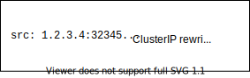

How do packets find their way back?
In a previous post “The Packet’s-Eye View of a Kubernetes Service", I studied how traffic flows in when using Kubernetes Services. In the last diagram of that post, I could not clearly see how traffic could make its way back to the user. In this article, I will try to understand how packets are able to flow back to the user and where stateless rewriting happens.
In the following diagram, we can see a packet coming from a user, then being re-written by Google’s VPC firewalls and finally coming into a VM “node 1”.

So, how come the packet can come back and does it use conntrack and
does Google’s firewall have to remember some state?
Update 14th April: I initially thought that the conntrack kernel module would not register anything when using DNAT. @networkop1 showed me that conntrack registers the connection even for stateless DNATing.
conntrack is a part of the netfilter suite in the Linux kernel. It is in charge of remembering connections that are forwarded. The initial packet hits the iptables machinery and conntrack remembers it so that further packets don’t need to go through iptables again. You can list the tracked connections using the conntrack(8) tool. I mention it in “Debugging Kubernetes Networking".
Let us dive a bit more and add the “response” packets. For the following diagram, I used the excellent textik ascii drawing tool.
D-NAT (dest-based NAT, also called port-forwarding)
+--------------------------------------------------------------------------+
| src: 90.76.45.149:32345 src: 35.211.248.124:80 |
| dst: 35.211.248.124:80 dst: 90.76.45.149:32345 |
+------------------------------90.76.45.149--------------------------------+
| (user) |
| |
+--------------------------------------------------------------------------+
| | one-to-one | |
| v port forwarding | |
| src: 90.76.45.149:32345 = - src: 10.142.0.62:80 |
| - dst: 35.211.248.124:80 no need for + src: 35.211.248.124:80 |
| + dst: 10.142.0.62:80 conntrack to dst: 90.76.45.149:32345 |
| | remember! ^ |
| | (stateless) | |
| | | |
+--------------|--------------35.211.248.124----------------|--------------+
| (Google's VPC) |
| |
| |
+--------------|--------------------------------------------|--------------+
| v userland process | |
| src: 90.76.45.149:32345 response src: 10.142.0.62:80 |
| dst: 10.142.0.62:80 ----------------> dst: 90.76.45.149:32345 |
| |
+-------------------------------10.142.0.62--------------------------------+
(VM in VPC)
By reading through the diagram, we can see that the packet is re-written by Google’s firewall using DNAT: the destination is replaced by a fixed IP, the one of the VM.
Why do I say “packets” but what I should really say is “segments”? That’s because I don’t really know anyone using this strict terminology. Outside of the kernel and TCP/IP stack implementors, who actually cares about the L3 layer “units”? And I enjoy the “packet” word too more than “segment”!
Now, why do I care about Google’s firewalls storing state? That’s because if some state about a connection has to be remembered, it means it is harder to distribute the firewall horizontally, which makes it harder to scale.
As we can see on the diagram, the firewall does not need to remember
anything: it is just a static one-to-one relation between 10.142.0.62 and
35.211.248.124.
Here is what I want to remember from this post:
-
Outgoing traffic from your broadband modem router has to be SNATed (source-based NAT). The router needs to keep track of outgoing connections using conntrack.
-
Incoming traffic from the Internet to a Google Cloud VM has to go through the VPC firewall. The packet rewriting is very fast and very scalable since it only uses DNAT, which means no need to remember anything.
-
Most packet forwarding in Kubernetes relies on stateless DNATing (e.g.
hostPortornodePort). Some parts of Kubernetes rely on stateful SNAT rewriting, for example when you useexternalTrafficPolicy: Clusterin a which is the default policy for a Service. The following diagram shows where this rewriting happens (extracted from the last diagram in “The Packet’s-Eye View of a Kubernetes Service"):